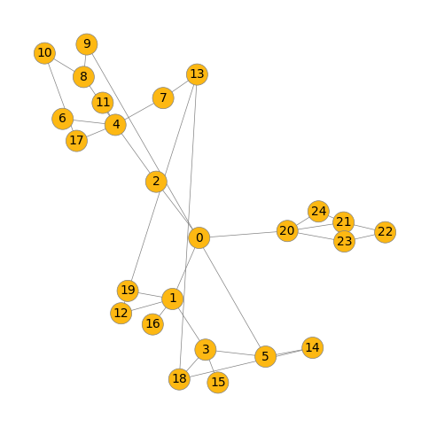
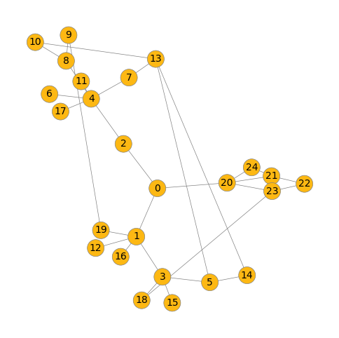
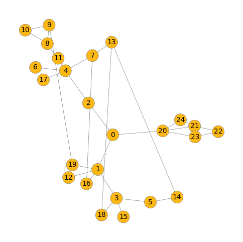
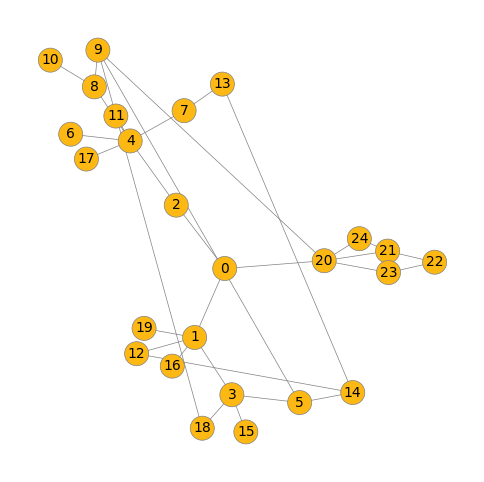
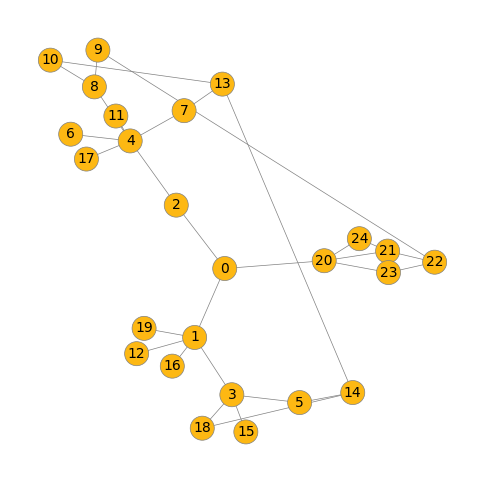
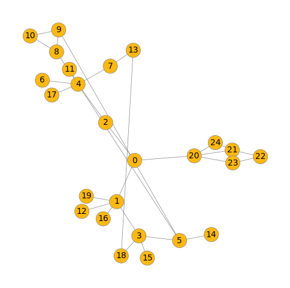
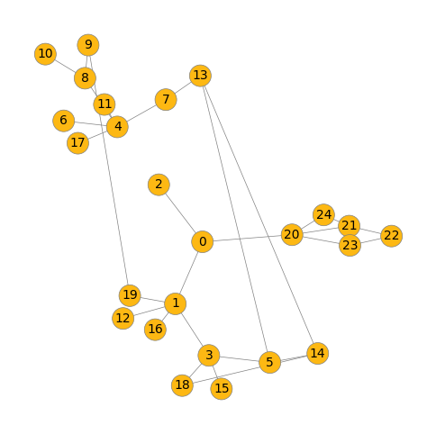
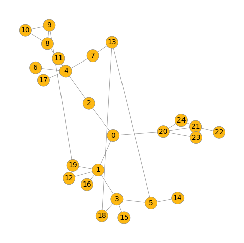
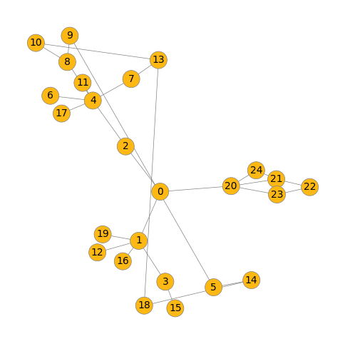

Embedding: [[0.085345, 0.005473, 0.000314, 0.000275, 0.008231, 0.510904, 0.000275, 0.000319, 0.385506, 0.000275, 0.000382, 0.000275, 0.000275, 0.000275, 0.000275, 0.000275, 0.000499, 0.000275, 0.000275, 0.000275]]
Output: [7.458724294601585e-37, 1.0]
Embedding: [[0.085393, 0.005626, 0.000237, 0.000206, 0.006487, 0.510634, 0.000206, 0.000281, 0.388333, 0.000206, 0.000326, 0.000206, 0.000206, 0.000206, 0.000206, 0.000206, 0.00042, 0.000206, 0.000206, 0.000206]]
Output: [2.4952058554377993e-38, 1.0]
Embedding: [[0.100662, 0.007694, 0.000705, 0.000526, 0.012993, 0.477363, 0.000526, 0.00065, 0.392383, 0.000526, 0.000767, 0.000526, 0.000526, 0.000526, 0.000526, 0.000526, 0.000998, 0.000526, 0.000526, 0.000526]]
Output: [4.045172873503074e-33, 1.0]
Embedding: [[0.101654, 0.008009, 0.000569, 0.000465, 0.011035, 0.468076, 0.000465, 0.000611, 0.403282, 0.000465, 0.000722, 0.000465, 0.000465, 0.000465, 0.000465, 0.000465, 0.00092, 0.000465, 0.000465, 0.000465]]
Output: [5.819937274945937e-34, 1.0]
Embedding: [[0.101365, 0.008144, 0.000664, 0.000535, 0.011317, 0.475126, 0.000535, 0.000683, 0.394944, 0.000535, 0.000835, 0.000535, 0.000535, 0.000535, 0.000535, 0.000535, 0.001035, 0.000535, 0.000535, 0.000535]]
Output: [5.20509302620292e-33, 1.0]
Embedding: [[0.0934, 0.008572, 0.00088, 0.000727, 0.011634, 0.485342, 0.000727, 0.00087, 0.388766, 0.000727, 0.001068, 0.000727, 0.000727, 0.000727, 0.000727, 0.000727, 0.001472, 0.000727, 0.000727, 0.000727]]
Output: [6.177812911735234e-31, 1.0]
Embedding: [[0.098387, 0.007517, 0.000587, 0.000492, 0.01093, 0.475768, 0.000492, 0.000652, 0.398983, 0.000492, 0.000834, 0.000492, 0.000492, 0.000492, 0.000492, 0.000492, 0.000925, 0.000492, 0.000492, 0.000492]]
Output: [1.818245661973291e-33, 1.0]
Embedding: [[0.103619, 0.008043, 0.000643, 0.000507, 0.011549, 0.473208, 0.000507, 0.000673, 0.394864, 0.000507, 0.000818, 0.000507, 0.000507, 0.000507, 0.000507, 0.000507, 0.001006, 0.000507, 0.000507, 0.000507]]
Output: [2.552465494639638e-33, 1.0]
Embedding: [[0.108911, 0.009054, 0.000764, 0.000597, 0.013234, 0.461257, 0.000597, 0.000776, 0.397268, 0.000597, 0.000919, 0.000597, 0.000597, 0.000597, 0.000597, 0.000597, 0.001245, 0.000597, 0.000597, 0.000597]]
Output: [1.4547456704243932e-32, 1.0]
Embedding: [[0.09687, 0.007702, 0.000684, 0.000531, 0.011154, 0.481773, 0.000531, 0.000696, 0.393356, 0.000531, 0.000862, 0.000531, 0.000531, 0.000531, 0.000531, 0.000531, 0.001057, 0.000531, 0.000531, 0.000531]]
Output: [9.357568330126914e-33, 1.0]
Embedding: [[0.11086, 0.008828, 0.000796, 0.000565, 0.013261, 0.463893, 0.000565, 0.00077, 0.393334, 0.000565, 0.000903, 0.000565, 0.000565, 0.000565, 0.000565, 0.000565, 0.001139, 0.000565, 0.000565, 0.000565]]
Output: [1.1369749437821766e-32, 1.0]
Embedding: [[0.103307, 0.008701, 0.000704, 0.000575, 0.012201, 0.467763, 0.000575, 0.000785, 0.398073, 0.000575, 0.00097, 0.000575, 0.000575, 0.000575, 0.000575, 0.000575, 0.001175, 0.000575, 0.000575, 0.000575]]
Output: [1.1789342146347782e-32, 1.0]
Embedding: [[0.10676, 0.008629, 0.000593, 0.000501, 0.010842, 0.469459, 0.000501, 0.000722, 0.39555, 0.000501, 0.000873, 0.000501, 0.000501, 0.000501, 0.000501, 0.000501, 0.00106, 0.000501, 0.000501, 0.000501]]
Output: [1.696861543913489e-33, 1.0]
Embedding: [[0.111923, 0.009361, 0.00082, 0.000559, 0.013393, 0.46046, 0.000559, 0.000776, 0.395015, 0.000559, 0.000896, 0.000559, 0.000559, 0.000559, 0.000559, 0.000559, 0.001209, 0.000559, 0.000559, 0.000559]]
Output: [1.0939604463445213e-32, 1.0]
Embedding: [[0.103279, 0.008923, 0.000921, 0.000646, 0.012812, 0.472832, 0.000646, 0.000874, 0.390828, 0.000646, 0.001058, 0.000646, 0.000646, 0.000646, 0.000646, 0.000646, 0.001369, 0.000646, 0.000646, 0.000646]]
Output: [1.6198871689642113e-31, 1.0]
Embedding: [[0.106354, 0.008921, 0.000618, 0.000524, 0.011229, 0.469571, 0.000524, 0.000781, 0.394683, 0.000524, 0.000949, 0.000524, 0.000524, 0.000524, 0.000524, 0.000524, 0.001134, 0.000524, 0.000524, 0.000524]]
Output: [3.1096685513706185e-33, 1.0]
Embedding: [[0.095617, 0.008589, 0.000603, 0.000538, 0.011455, 0.497719, 0.000538, 0.000792, 0.37709, 0.000538, 0.000961, 0.000538, 0.000538, 0.000538, 0.000538, 0.000538, 0.00126, 0.000538, 0.000538, 0.000538]]
Output: [5.585485569522905e-33, 1.0]
Embedding: [[0.100821, 0.009361, 0.001052, 0.000711, 0.012989, 0.479075, 0.000711, 0.000994, 0.385181, 0.000711, 0.001179, 0.000711, 0.000711, 0.000711, 0.000711, 0.000711, 0.001524, 0.000711, 0.000711, 0.000711]]
Output: [9.255547234193765e-31, 1.0]
Embedding: [[0.110403, 0.009087, 0.000803, 0.000537, 0.012585, 0.460523, 0.000537, 0.000782, 0.39778, 0.000537, 0.00091, 0.000537, 0.000537, 0.000537, 0.000537, 0.000537, 0.001221, 0.000537, 0.000537, 0.000537]]
Output: [1.1068642151754821e-32, 1.0]
Embedding: [[0.112653, 0.009917, 0.000697, 0.000603, 0.013947, 0.470639, 0.000603, 0.000917, 0.382117, 0.000603, 0.001066, 0.000603, 0.000603, 0.000603, 0.000603, 0.000603, 0.001417, 0.000603, 0.000603, 0.000603]]
Output: [8.97036342970193e-33, 1.0]
Embedding: [[0.117296, 0.009659, 0.00118, 0.000679, 0.014871, 0.450486, 0.000679, 0.000973, 0.395476, 0.000679, 0.001089, 0.000679, 0.000679, 0.000679, 0.000679, 0.000679, 0.0015, 0.000679, 0.000679, 0.000679]]
Output: [4.440690399779333e-31, 1.0]
Embedding: [[0.112496, 0.009181, 0.0009, 0.000555, 0.013458, 0.459255, 0.000555, 0.000821, 0.395593, 0.000555, 0.000946, 0.000555, 0.000555, 0.000555, 0.000555, 0.000555, 0.001246, 0.000555, 0.000555, 0.000555]]
Output: [2.2811752105284762e-32, 1.0]
Embedding: [[0.104844, 0.008299, 0.000435, 0.000391, 0.009692, 0.468237, 0.000391, 0.000643, 0.401852, 0.000391, 0.000808, 0.000391, 0.000391, 0.000391, 0.000391, 0.000391, 0.000891, 0.000391, 0.000391, 0.000391]]
Output: [5.648948879443743e-35, 1.0]
Embedding: [[0.119329, 0.010473, 0.000789, 0.000642, 0.014839, 0.45569, 0.000642, 0.000998, 0.388147, 0.000642, 0.001161, 0.000642, 0.000642, 0.000642, 0.000642, 0.000642, 0.001511, 0.000642, 0.000642, 0.000642]]
Output: [2.238453190778985e-32, 1.0]
Embedding: [[0.107053, 0.009957, 0.000753, 0.000579, 0.012685, 0.479745, 0.000579, 0.000913, 0.38012, 0.000579, 0.00106, 0.000579, 0.000579, 0.000579, 0.000579, 0.000579, 0.001345, 0.000579, 0.000579, 0.000579]]
Output: [1.621945342023066e-32, 1.0]
Embedding: [[0.105537, 0.008889, 0.000549, 0.000461, 0.010812, 0.475521, 0.000461, 0.000758, 0.39086, 0.000461, 0.000919, 0.000461, 0.000461, 0.000461, 0.000461, 0.000461, 0.00109, 0.000461, 0.000461, 0.000461]]
Output: [6.9975649643439745e-34, 1.0]
Embedding: [[0.107314, 0.009863, 0.001774, 0.000976, 0.018356, 0.471141, 0.000976, 0.001393, 0.375594, 0.000976, 0.001512, 0.000976, 0.000976, 0.000976, 0.000976, 0.000976, 0.002316, 0.000976, 0.000976, 0.000976]]
Output: [1.3828245611954622e-28, 1.0]
Embedding: [[0.101127, 0.009807, 0.000755, 0.000636, 0.011935, 0.486648, 0.000636, 0.001015, 0.3789, 0.000636, 0.001214, 0.000636, 0.000636, 0.000636, 0.000636, 0.000636, 0.001598, 0.000636, 0.000636, 0.000636]]
Output: [8.058458699498567e-32, 1.0]

Embedding: [[0.114669, 0.010304, 0.001946, 0.000959, 0.020678, 0.461096, 0.000959, 0.001386, 0.375631, 0.000959, 0.001484, 0.000959, 0.000959, 0.000959, 0.000959, 0.000959, 0.002252, 0.000959, 0.000959, 0.000959]]
Output: [9.806667359802779e-29, 1.0]
Embedding: [[0.106849, 0.009637, 0.000929, 0.000604, 0.013098, 0.477815, 0.000604, 0.000982, 0.381437, 0.000604, 0.001097, 0.000604, 0.000604, 0.000604, 0.000604, 0.000604, 0.001512, 0.000604, 0.000604, 0.000604]]
Output: [1.0419911064106987e-31, 1.0]
Embedding: [[0.104656, 0.009889, 0.001376, 0.00088, 0.014945, 0.469107, 0.00088, 0.001295, 0.385425, 0.00088, 0.001562, 0.00088, 0.00088, 0.00088, 0.00088, 0.00088, 0.002065, 0.00088, 0.00088, 0.00088]]
Output: [2.6399320591557925e-29, 1.0]
Embedding: [[0.103391, 0.01052, 0.001652, 0.001068, 0.015571, 0.473815, 0.001068, 0.001512, 0.377391, 0.001068, 0.001768, 0.001068, 0.001068, 0.001068, 0.001068, 0.001068, 0.002627, 0.001068, 0.001068, 0.001068]]
Output: [4.219132803239173e-28, 1.0]

Embedding: [[0.105095, 0.01251, 0.001858, 0.001487, 0.017169, 0.45827, 0.001487, 0.002108, 0.380258, 0.001487, 0.002666, 0.001487, 0.001487, 0.001487, 0.001487, 0.001487, 0.00371, 0.001487, 0.001487, 0.001487]]
Output: [1.1723899780487037e-26, 1.0]
Embedding: [[0.114609, 0.012563, 0.002025, 0.001443, 0.017712, 0.446486, 0.001443, 0.0021, 0.382674, 0.001443, 0.002658, 0.001443, 0.001443, 0.001443, 0.001443, 0.001443, 0.003301, 0.001443, 0.001443, 0.001443]]
Output: [9.470285182013958e-27, 1.0]
Embedding: [[0.100458, 0.010186, 0.001761, 0.001103, 0.016791, 0.483473, 0.001103, 0.001613, 0.368889, 0.001103, 0.001901, 0.001103, 0.001103, 0.001103, 0.001103, 0.001103, 0.002791, 0.001103, 0.001103, 0.001103]]
Output: [9.241342763583853e-28, 1.0]
Embedding: [[0.109371, 0.010388, 0.001084, 0.000728, 0.0127, 0.45679, 0.000728, 0.001189, 0.397212, 0.000728, 0.001552, 0.000728, 0.000728, 0.000728, 0.000728, 0.000728, 0.001705, 0.000728, 0.000728, 0.000728]]
Output: [1.6588023326261495e-30, 1.0]
Embedding: [[0.11554, 0.01278, 0.001909, 0.001401, 0.017639, 0.441333, 0.001401, 0.002077, 0.387404, 0.001401, 0.002584, 0.001401, 0.001401, 0.001401, 0.001401, 0.001401, 0.003326, 0.001401, 0.001401, 0.001401]]
Output: [4.917412986129776e-27, 1.0]
Embedding: [[0.094242, 0.010869, 0.002071, 0.001303, 0.017397, 0.491747, 0.001303, 0.00185, 0.361805, 0.001303, 0.002171, 0.001303, 0.001303, 0.001303, 0.001303, 0.001303, 0.003515, 0.001303, 0.001303, 0.001303]]
Output: [1.2497653691224276e-26, 1.0]
Embedding: [[0.100788, 0.010217, 0.001691, 0.000954, 0.016387, 0.476927, 0.000954, 0.001481, 0.377895, 0.000954, 0.001768, 0.000954, 0.000954, 0.000954, 0.000954, 0.000954, 0.002354, 0.000954, 0.000954, 0.000954]]
Output: [1.9034685456695767e-28, 1.0]
Embedding: [[0.116271, 0.01067, 0.00104, 0.000675, 0.015032, 0.467466, 0.000675, 0.001197, 0.377702, 0.000675, 0.001326, 0.000675, 0.000675, 0.000675, 0.000675, 0.000675, 0.001876, 0.000675, 0.000675, 0.000675]]
Output: [3.3258727163577906e-31, 1.0]
Embedding: [[0.116092, 0.013725, 0.002625, 0.00175, 0.020677, 0.437918, 0.00175, 0.002519, 0.379753, 0.00175, 0.003068, 0.00175, 0.00175, 0.00175, 0.00175, 0.00175, 0.004372, 0.00175, 0.00175, 0.00175]]
Output: [1.5805274435552487e-25, 1.0]
Embedding: [[0.121968, 0.013524, 0.002034, 0.001361, 0.01779, 0.435789, 0.001361, 0.002187, 0.385618, 0.001361, 0.002726, 0.001361, 0.001361, 0.001361, 0.001361, 0.001361, 0.00339, 0.001361, 0.001361, 0.001361]]
Output: [5.0499323737431726e-27, 1.0]
Embedding: [[0.112876, 0.014206, 0.003057, 0.001969, 0.022281, 0.444115, 0.001969, 0.002914, 0.370284, 0.001969, 0.003537, 0.001969, 0.001969, 0.001969, 0.001969, 0.001969, 0.005071, 0.001969, 0.001969, 0.001969]]
Output: [1.1544924127646142e-24, 1.0]
Embedding: [[0.134622, 0.015441, 0.0023, 0.001498, 0.022871, 0.424979, 0.001498, 0.002559, 0.373866, 0.001498, 0.002979, 0.001498, 0.001498, 0.001498, 0.001498, 0.001498, 0.003906, 0.001498, 0.001498, 0.001498]]
Output: [7.156731791811658e-27, 1.0]
Embedding: [[0.119574, 0.013662, 0.001421, 0.001053, 0.014817, 0.444188, 0.001053, 0.001878, 0.387682, 0.001053, 0.002376, 0.001053, 0.001053, 0.001053, 0.001053, 0.001053, 0.002823, 0.001053, 0.001053, 0.001053]]
Output: [1.1239197524709202e-28, 1.0]
Embedding: [[0.106845, 0.01386, 0.002525, 0.001661, 0.018973, 0.461337, 0.001661, 0.002491, 0.368027, 0.001661, 0.003219, 0.001661, 0.001661, 0.001661, 0.001661, 0.001661, 0.004448, 0.001661, 0.001661, 0.001661]]
Output: [1.6242606595455372e-25, 1.0]
Embedding: [[0.117458, 0.015466, 0.002103, 0.001672, 0.019457, 0.445452, 0.001672, 0.002731, 0.370984, 0.001672, 0.003277, 0.001672, 0.001672, 0.001672, 0.001672, 0.001672, 0.004683, 0.001672, 0.001672, 0.001672]]
Output: [3.354179253324597e-26, 1.0]
Embedding: [[0.113498, 0.014258, 0.002254, 0.001471, 0.018102, 0.443972, 0.001471, 0.002337, 0.382551, 0.001471, 0.002984, 0.001471, 0.001471, 0.001471, 0.001471, 0.001471, 0.00386, 0.001471, 0.001471, 0.001471]]
Output: [2.2501805883450397e-26, 1.0]

Embedding: [[0.117861, 0.013159, 0.001396, 0.001062, 0.016259, 0.445096, 0.001062, 0.001932, 0.38734, 0.001062, 0.002463, 0.001062, 0.001062, 0.001062, 0.001062, 0.001062, 0.002813, 0.001062, 0.001062, 0.001062]]
Output: [9.548339367096581e-29, 1.0]
Embedding: [[0.114315, 0.01342, 0.00256, 0.001515, 0.019028, 0.442538, 0.001515, 0.002422, 0.382203, 0.001515, 0.002915, 0.001515, 0.001515, 0.001515, 0.001515, 0.001515, 0.003929, 0.001515, 0.001515, 0.001515]]
Output: [6.072939059362238e-26, 1.0]
Embedding: [[0.116213, 0.014433, 0.001947, 0.001527, 0.018709, 0.452683, 0.001527, 0.002607, 0.369261, 0.001527, 0.003223, 0.001527, 0.001527, 0.001527, 0.001527, 0.001527, 0.004131, 0.001527, 0.001527, 0.001527]]
Output: [1.3005570721365766e-26, 1.0]
Embedding: [[0.10992, 0.01392, 0.002853, 0.001719, 0.019177, 0.452365, 0.001719, 0.002733, 0.372277, 0.001719, 0.003315, 0.001719, 0.001719, 0.001719, 0.001719, 0.001719, 0.004532, 0.001719, 0.001719, 0.001719]]
Output: [4.372557883064982e-25, 1.0]
Embedding: [[0.120165, 0.01504, 0.002371, 0.001675, 0.021066, 0.446876, 0.001675, 0.002859, 0.365237, 0.001675, 0.003444, 0.001675, 0.001675, 0.001675, 0.001675, 0.001675, 0.004518, 0.001675, 0.001675, 0.001675]]
Output: [5.884365557754648e-26, 1.0]
Embedding: [[0.116185, 0.014359, 0.004656, 0.002135, 0.029351, 0.445417, 0.002135, 0.003241, 0.353873, 0.002135, 0.003577, 0.002135, 0.002135, 0.002135, 0.002135, 0.002135, 0.005854, 0.002135, 0.002135, 0.002135]]
Output: [1.3182208880736878e-23, 1.0]
Embedding: [[0.097469, 0.013848, 0.00182, 0.001439, 0.015064, 0.486599, 0.001439, 0.002447, 0.359631, 0.001439, 0.002955, 0.001439, 0.001439, 0.001439, 0.001439, 0.001439, 0.004343, 0.001439, 0.001439, 0.001439]]
Output: [2.144673369685245e-26, 1.0]
Embedding: [[0.118052, 0.014195, 0.001698, 0.001348, 0.019407, 0.464545, 0.001348, 0.002526, 0.357933, 0.001348, 0.002948, 0.001348, 0.001348, 0.001348, 0.001348, 0.001348, 0.003864, 0.001348, 0.001348, 0.001348]]
Output: [1.773382811282156e-27, 1.0]
Embedding: [[0.118825, 0.014565, 0.003757, 0.002046, 0.023621, 0.435495, 0.002046, 0.003162, 0.368852, 0.002046, 0.003797, 0.002046, 0.002046, 0.002046, 0.002046, 0.002046, 0.005421, 0.002046, 0.002046, 0.002046]]
Output: [4.669415609422898e-24, 1.0]
Embedding: [[0.119621, 0.015362, 0.003281, 0.00189, 0.021553, 0.432111, 0.00189, 0.003024, 0.375559, 0.00189, 0.003719, 0.00189, 0.00189, 0.00189, 0.00189, 0.00189, 0.004977, 0.00189, 0.00189, 0.00189]]
Output: [1.122315368086328e-24, 1.0]
Embedding: [[0.10579, 0.014207, 0.003026, 0.001827, 0.019987, 0.46323, 0.001827, 0.002892, 0.362058, 0.001827, 0.003525, 0.001827, 0.001827, 0.001827, 0.001827, 0.001827, 0.005185, 0.001827, 0.001827, 0.001827]]
Output: [1.2227499830954464e-24, 1.0]
Embedding: [[0.116142, 0.01393, 0.00264, 0.001691, 0.021304, 0.4538, 0.001691, 0.002925, 0.362452, 0.001691, 0.003441, 0.001691, 0.001691, 0.001691, 0.001691, 0.001691, 0.004763, 0.001691, 0.001691, 0.001691]]
Output: [1.8032846301168772e-25, 1.0]
Embedding: [[0.118112, 0.015117, 0.004033, 0.002137, 0.023696, 0.434942, 0.002137, 0.003338, 0.36748, 0.002137, 0.004019, 0.002137, 0.002137, 0.002137, 0.002137, 0.002137, 0.005755, 0.002137, 0.002137, 0.002137]]
Output: [1.0797654335931098e-23, 1.0]
Embedding: [[0.110784, 0.014216, 0.004835, 0.002423, 0.0264, 0.444369, 0.002423, 0.003721, 0.358097, 0.002423, 0.004259, 0.002423, 0.002423, 0.002423, 0.002423, 0.002423, 0.006664, 0.002423, 0.002423, 0.002423]]
Output: [1.1264168847022346e-22, 1.0]
Embedding: [[0.11764, 0.014803, 0.003162, 0.002017, 0.023258, 0.448434, 0.002017, 0.00337, 0.357391, 0.002017, 0.00396, 0.002017, 0.002017, 0.002017, 0.002017, 0.002017, 0.00579, 0.002017, 0.002017, 0.002017]]
Output: [1.937368033082488e-24, 1.0]
Embedding: [[0.123149, 0.014972, 0.003678, 0.001829, 0.023008, 0.428685, 0.001829, 0.003112, 0.374719, 0.001829, 0.003604, 0.001829, 0.001829, 0.001829, 0.001829, 0.001829, 0.00495, 0.001829, 0.001829, 0.001829]]
Output: [1.4386043162616483e-24, 1.0]
Embedding: [[0.11293, 0.016262, 0.003937, 0.002404, 0.021898, 0.436993, 0.002404, 0.003699, 0.366428, 0.002404, 0.004458, 0.002404, 0.002404, 0.002404, 0.002404, 0.002404, 0.006953, 0.002404, 0.002404, 0.002404]]
Output: [4.090379477646644e-23, 1.0]
Embedding: [[0.121445, 0.014028, 0.00247, 0.001481, 0.021397, 0.450656, 0.001481, 0.002719, 0.363579, 0.001481, 0.003204, 0.001481, 0.001481, 0.001481, 0.001481, 0.001481, 0.004215, 0.001481, 0.001481, 0.001481]]
Output: [3.046811927556874e-26, 1.0]
Embedding: [[0.132638, 0.013955, 0.002513, 0.001397, 0.023007, 0.422275, 0.001397, 0.002597, 0.380518, 0.001397, 0.002924, 0.001397, 0.001397, 0.001397, 0.001397, 0.001397, 0.004205, 0.001397, 0.001397, 0.001397]]
Output: [1.217131795847148e-26, 1.0]
Embedding: [[0.120058, 0.015087, 0.00258, 0.001613, 0.021942, 0.446224, 0.001613, 0.002949, 0.365242, 0.001613, 0.003367, 0.001613, 0.001613, 0.001613, 0.001613, 0.001613, 0.004804, 0.001613, 0.001613, 0.001613]]
Output: [7.413521269826257e-26, 1.0]

Embedding: [[0.11356, 0.014667, 0.004731, 0.002365, 0.024839, 0.439521, 0.002365, 0.003707, 0.362036, 0.002365, 0.004288, 0.002365, 0.002365, 0.002365, 0.002365, 0.002365, 0.006635, 0.002365, 0.002365, 0.002365]]
Output: [8.816861679383683e-23, 1.0]
Embedding: [[0.106324, 0.0155, 0.004002, 0.002379, 0.020754, 0.449064, 0.002379, 0.003691, 0.36321, 0.002379, 0.004613, 0.002379, 0.002379, 0.002379, 0.002379, 0.002379, 0.006677, 0.002379, 0.002379, 0.002379]]
Output: [6.816808352746572e-23, 1.0]
Embedding: [[0.107686, 0.015092, 0.004622, 0.002492, 0.021805, 0.447339, 0.002492, 0.003828, 0.360658, 0.002492, 0.00464, 0.002492, 0.002492, 0.002492, 0.002492, 0.002492, 0.006913, 0.002492, 0.002492, 0.002492]]
Output: [2.1931264652101013e-22, 1.0]
Embedding: [[0.122681, 0.014981, 0.002332, 0.001488, 0.019988, 0.43764, 0.001488, 0.002819, 0.375419, 0.001488, 0.003386, 0.001488, 0.001488, 0.001488, 0.001488, 0.001488, 0.004387, 0.001488, 0.001488, 0.001488]]
Output: [2.6175742200986554e-26, 1.0]
Embedding: [[0.118616, 0.01558, 0.005716, 0.002436, 0.028808, 0.43336, 0.002436, 0.003913, 0.356063, 0.002436, 0.004346, 0.002436, 0.002436, 0.002436, 0.002436, 0.002436, 0.006799, 0.002436, 0.002436, 0.002436]]
Output: [1.7240728001915637e-22, 1.0]
Embedding: [[0.107749, 0.013511, 0.004122, 0.002154, 0.024826, 0.454922, 0.002154, 0.003483, 0.357343, 0.002154, 0.004187, 0.002154, 0.002154, 0.002154, 0.002154, 0.002154, 0.006164, 0.002154, 0.002154, 0.002154]]
Output: [2.48802027895712e-23, 1.0]
Embedding: [[0.125791, 0.015967, 0.002955, 0.001858, 0.022729, 0.430704, 0.001858, 0.003413, 0.368641, 0.001858, 0.004094, 0.001858, 0.001858, 0.001858, 0.001858, 0.001858, 0.005268, 0.001858, 0.001858, 0.001858]]
Output: [4.8618897816877725e-25, 1.0]
Embedding: [[0.129672, 0.016785, 0.003195, 0.001821, 0.025095, 0.430376, 0.001821, 0.003355, 0.362102, 0.001821, 0.003688, 0.001821, 0.001821, 0.001821, 0.001821, 0.001821, 0.005706, 0.001821, 0.001821, 0.001821]]
Output: [3.8309602516858054e-25, 1.0]
Embedding: [[0.118528, 0.014332, 0.002826, 0.00166, 0.020182, 0.443737, 0.00166, 0.003071, 0.370566, 0.00166, 0.003696, 0.00166, 0.00166, 0.00166, 0.00166, 0.00166, 0.004801, 0.00166, 0.00166, 0.00166]]
Output: [2.9698493017888313e-25, 1.0]
Embedding: [[0.128222, 0.015574, 0.002808, 0.00156, 0.022802, 0.433562, 0.00156, 0.003024, 0.368429, 0.00156, 0.00342, 0.00156, 0.00156, 0.00156, 0.00156, 0.00156, 0.005004, 0.00156, 0.00156, 0.00156]]
Output: [7.56715501260596e-26, 1.0]
Embedding: [[0.122956, 0.016801, 0.003124, 0.002019, 0.022875, 0.434522, 0.002019, 0.003716, 0.363178, 0.002019, 0.004426, 0.002019, 0.002019, 0.002019, 0.002019, 0.002019, 0.00619, 0.002019, 0.002019, 0.002019]]
Output: [1.6473432226703698e-24, 1.0]
Embedding: [[0.120752, 0.015147, 0.002251, 0.001362, 0.019553, 0.448024, 0.001362, 0.002735, 0.368824, 0.001362, 0.003341, 0.001362, 0.001362, 0.001362, 0.001362, 0.001362, 0.004386, 0.001362, 0.001362, 0.001362]]
Output: [1.2642367296873555e-26, 1.0]
Embedding: [[0.10644, 0.015111, 0.004381, 0.002347, 0.020803, 0.449065, 0.002347, 0.00398, 0.362872, 0.002347, 0.004923, 0.002347, 0.002347, 0.002347, 0.002347, 0.002347, 0.006603, 0.002347, 0.002347, 0.002347]]
Output: [1.3502906871119092e-22, 1.0]
Embedding: [[0.121863, 0.016285, 0.002931, 0.001819, 0.021635, 0.437595, 0.001819, 0.003447, 0.366438, 0.001819, 0.00414, 0.001819, 0.001819, 0.001819, 0.001819, 0.001819, 0.005652, 0.001819, 0.001819, 0.001819]]
Output: [5.683951870257274e-25, 1.0]
Embedding: [[0.122994, 0.016504, 0.002897, 0.001743, 0.021115, 0.433167, 0.001743, 0.003344, 0.371337, 0.001743, 0.003966, 0.001743, 0.001743, 0.001743, 0.001743, 0.001743, 0.005501, 0.001743, 0.001743, 0.001743]]
Output: [3.5720055661905286e-25, 1.0]
Embedding: [[0.116786, 0.015393, 0.002167, 0.001488, 0.019342, 0.46883, 0.001488, 0.003094, 0.349496, 0.001488, 0.003437, 0.001488, 0.001488, 0.001488, 0.001488, 0.001488, 0.00509, 0.001488, 0.001488, 0.001488]]
Output: [2.912050141190628e-26, 1.0]
Embedding: [[0.123674, 0.017672, 0.005419, 0.002618, 0.028912, 0.428959, 0.002618, 0.004432, 0.349252, 0.002618, 0.005259, 0.002618, 0.002618, 0.002618, 0.002618, 0.002618, 0.007617, 0.002618, 0.002618, 0.002618]]
Output: [2.1555617924276906e-22, 1.0]
Embedding: [[0.124512, 0.016251, 0.003837, 0.001973, 0.025778, 0.436894, 0.001973, 0.003789, 0.35705, 0.001973, 0.004214, 0.001973, 0.001973, 0.001973, 0.001973, 0.001973, 0.005974, 0.001973, 0.001973, 0.001973]]
Output: [3.2336694348284784e-24, 1.0]
Embedding: [[0.124184, 0.019044, 0.005306, 0.003425, 0.026054, 0.402382, 0.003425, 0.005545, 0.362921, 0.003425, 0.00704, 0.003425, 0.003425, 0.003425, 0.003425, 0.003425, 0.009849, 0.003425, 0.003425, 0.003425]]
Output: [3.4317526416323024e-21, 1.0]
Embedding: [[0.118431, 0.016133, 0.00545, 0.002456, 0.025083, 0.429107, 0.002456, 0.004245, 0.362207, 0.002456, 0.005022, 0.002456, 0.002456, 0.002456, 0.002456, 0.002456, 0.007308, 0.002456, 0.002456, 0.002456]]
Output: [2.9220261161341364e-22, 1.0]
Embedding: [[0.12751, 0.017024, 0.004071, 0.002238, 0.027111, 0.433233, 0.002238, 0.004252, 0.350262, 0.002238, 0.004851, 0.002238, 0.002238, 0.002238, 0.002238, 0.002238, 0.007071, 0.002238, 0.002238, 0.002238]]
Output: [1.3088507982414727e-23, 1.0]
Embedding: [[0.12745, 0.016949, 0.004062, 0.002184, 0.02688, 0.429804, 0.002184, 0.004197, 0.355021, 0.002184, 0.00483, 0.002184, 0.002184, 0.002184, 0.002184, 0.002184, 0.006781, 0.002184, 0.002184, 0.002184]]
Output: [1.0479507521716369e-23, 1.0]
Embedding: [[0.123243, 0.017308, 0.006071, 0.002798, 0.02736, 0.421411, 0.002798, 0.004868, 0.355082, 0.002798, 0.005846, 0.002798, 0.002798, 0.002798, 0.002798, 0.002798, 0.008033, 0.002798, 0.002798, 0.002798]]
Output: [1.1916234455519814e-21, 1.0]
Embedding: [[0.128353, 0.020754, 0.005507, 0.003422, 0.026083, 0.395236, 0.003422, 0.005759, 0.363435, 0.003422, 0.007346, 0.003422, 0.003422, 0.003422, 0.003422, 0.003422, 0.009883, 0.003422, 0.003422, 0.003422]]
Output: [3.3814365939859586e-21, 1.0]
Embedding: [[0.123709, 0.016445, 0.006362, 0.002511, 0.029135, 0.426457, 0.002511, 0.004445, 0.353083, 0.002511, 0.004961, 0.002511, 0.002511, 0.002511, 0.002511, 0.002511, 0.007782, 0.002511, 0.002511, 0.002511]]
Output: [5.119402837683824e-22, 1.0]
Embedding: [[0.119686, 0.018458, 0.005565, 0.002861, 0.024951, 0.425631, 0.002861, 0.00487, 0.354799, 0.002861, 0.006018, 0.002861, 0.002861, 0.002861, 0.002861, 0.002861, 0.008548, 0.002861, 0.002861, 0.002861]]
Output: [1.1358195513343918e-21, 1.0]
Embedding: [[0.10301, 0.016396, 0.005413, 0.002889, 0.022059, 0.449816, 0.002889, 0.004833, 0.351708, 0.002889, 0.005908, 0.002889, 0.002889, 0.002889, 0.002889, 0.002889, 0.009074, 0.002889, 0.002889, 0.002889]]
Output: [3.5650838166181936e-21, 1.0]
Embedding: [[0.138123, 0.018157, 0.002673, 0.001885, 0.022421, 0.403836, 0.001885, 0.004123, 0.378866, 0.001885, 0.00498, 0.001885, 0.001885, 0.001885, 0.001885, 0.001885, 0.006089, 0.001885, 0.001885, 0.001885]]
Output: [3.2091887143567548e-25, 1.0]
Embedding: [[0.115606, 0.016566, 0.006298, 0.002782, 0.026103, 0.431553, 0.002782, 0.004806, 0.354223, 0.002782, 0.005606, 0.002782, 0.002782, 0.002782, 0.002782, 0.002782, 0.00864, 0.002782, 0.002782, 0.002782]]
Output: [2.4021371436670023e-21, 1.0]
Embedding: [[0.135972, 0.01763, 0.004271, 0.001977, 0.025257, 0.414357, 0.001977, 0.004057, 0.365693, 0.001977, 0.004381, 0.001977, 0.001977, 0.001977, 0.001977, 0.001977, 0.00663, 0.001977, 0.001977, 0.001977]]
Output: [5.7063097660330475e-24, 1.0]
Embedding: [[0.123231, 0.017798, 0.004137, 0.002165, 0.024851, 0.433613, 0.002165, 0.004268, 0.355847, 0.002165, 0.004748, 0.002165, 0.002165, 0.002165, 0.002165, 0.002165, 0.007696, 0.002165, 0.002165, 0.002165]]
Output: [1.6735349627239952e-23, 1.0]
Embedding: [[0.127113, 0.018801, 0.004136, 0.002762, 0.027388, 0.415586, 0.002762, 0.005568, 0.355386, 0.002762, 0.006061, 0.002762, 0.002762, 0.002762, 0.002762, 0.002762, 0.009576, 0.002762, 0.002762, 0.002762]]
Output: [1.1664814261388545e-22, 1.0]
Embedding: [[0.124799, 0.017169, 0.007085, 0.002779, 0.030179, 0.419312, 0.002779, 0.005171, 0.350889, 0.002779, 0.006001, 0.002779, 0.002779, 0.002779, 0.002779, 0.002779, 0.008829, 0.002779, 0.002779, 0.002779]]
Output: [2.73429983891141e-21, 1.0]
Embedding: [[0.120398, 0.018905, 0.004541, 0.003063, 0.024057, 0.419328, 0.003063, 0.005952, 0.355921, 0.003063, 0.007787, 0.003063, 0.003063, 0.003063, 0.003063, 0.003063, 0.009419, 0.003063, 0.003063, 0.003063]]
Output: [1.0639430894894673e-21, 1.0]
Embedding: [[0.127876, 0.017979, 0.003733, 0.002484, 0.02626, 0.413285, 0.002484, 0.005317, 0.36326, 0.002484, 0.006425, 0.002484, 0.002484, 0.002484, 0.002484, 0.002484, 0.008544, 0.002484, 0.002484, 0.002484]]
Output: [3.464924166966199e-23, 1.0]
Embedding: [[0.14529, 0.019939, 0.003766, 0.00244, 0.030666, 0.39441, 0.00244, 0.005643, 0.358221, 0.00244, 0.005751, 0.00244, 0.00244, 0.00244, 0.00244, 0.00244, 0.009471, 0.00244, 0.00244, 0.00244]]
Output: [1.1196817165112025e-23, 1.0]
Embedding: [[0.130535, 0.020516, 0.006078, 0.003352, 0.026318, 0.393411, 0.003352, 0.006301, 0.36165, 0.003352, 0.008274, 0.003352, 0.003352, 0.003352, 0.003352, 0.003352, 0.010043, 0.003352, 0.003352, 0.003352]]
Output: [7.000254232832246e-21, 1.0]
Embedding: [[0.12385, 0.018197, 0.006248, 0.002416, 0.026109, 0.427618, 0.002416, 0.004764, 0.352744, 0.002416, 0.005624, 0.002416, 0.002416, 0.002416, 0.002416, 0.002416, 0.00827, 0.002416, 0.002416, 0.002416]]
Output: [5.431809931506601e-22, 1.0]
Embedding: [[0.123047, 0.018047, 0.008014, 0.002942, 0.03036, 0.422149, 0.002942, 0.005534, 0.344419, 0.002942, 0.006366, 0.002942, 0.002942, 0.002942, 0.002942, 0.002942, 0.009704, 0.002942, 0.002942, 0.002942]]
Output: [1.0207169652008545e-20, 1.0]
Embedding: [[0.126825, 0.018631, 0.005623, 0.002786, 0.025139, 0.406076, 0.002786, 0.005551, 0.365698, 0.002786, 0.006912, 0.002786, 0.002786, 0.002786, 0.002786, 0.002786, 0.008895, 0.002786, 0.002786, 0.002786]]
Output: [1.2135743269659847e-21, 1.0]

Embedding: [[0.114237, 0.01682, 0.007222, 0.002901, 0.029684, 0.433724, 0.002901, 0.005569, 0.344943, 0.002901, 0.006655, 0.002901, 0.002901, 0.002901, 0.002901, 0.002901, 0.009232, 0.002901, 0.002901, 0.002901]]
Output: [7.748930235375163e-21, 1.0]
Embedding: [[0.130112, 0.017868, 0.006505, 0.00267, 0.028796, 0.418465, 0.00267, 0.005204, 0.348446, 0.00267, 0.006333, 0.00267, 0.00267, 0.00267, 0.00267, 0.00267, 0.008906, 0.00267, 0.00267, 0.00267]]
Output: [1.2974088599050031e-21, 1.0]
Embedding: [[0.127529, 0.02122, 0.004298, 0.003115, 0.023211, 0.417201, 0.003115, 0.00653, 0.346767, 0.003115, 0.008579, 0.003115, 0.003115, 0.003115, 0.003115, 0.003115, 0.010405, 0.003115, 0.003115, 0.003115]]
Output: [8.858468223008956e-22, 1.0]
Embedding: [[0.130939, 0.022699, 0.006328, 0.003679, 0.027205, 0.398395, 0.003679, 0.007244, 0.346065, 0.003679, 0.009065, 0.003679, 0.003679, 0.003679, 0.003679, 0.003679, 0.011587, 0.003679, 0.003679, 0.003679]]
Output: [1.827408701721856e-20, 1.0]
Embedding: [[0.127952, 0.01665, 0.004353, 0.001756, 0.023731, 0.42859, 0.001756, 0.004099, 0.363893, 0.001756, 0.004686, 0.001756, 0.001756, 0.001756, 0.001756, 0.001756, 0.006729, 0.001756, 0.001756, 0.001756]]
Output: [5.9082814291663306e-24, 1.0]

Embedding: [[0.120355, 0.020262, 0.0092, 0.004485, 0.032062, 0.397071, 0.004485, 0.007847, 0.340136, 0.004485, 0.009698, 0.004485, 0.004485, 0.004485, 0.004485, 0.004485, 0.014031, 0.004485, 0.004485, 0.004485]]
Output: [1.1260926666567211e-18, 1.0]
Embedding: [[0.127813, 0.01706, 0.004511, 0.00182, 0.023967, 0.427754, 0.00182, 0.004248, 0.362798, 0.00182, 0.004857, 0.00182, 0.00182, 0.00182, 0.00182, 0.00182, 0.006974, 0.00182, 0.00182, 0.00182]]
Output: [9.62251743327685e-24, 1.0]
Embedding: [[0.126013, 0.020272, 0.00799, 0.003078, 0.026177, 0.406415, 0.003078, 0.005973, 0.355745, 0.003078, 0.00692, 0.003078, 0.003078, 0.003078, 0.003078, 0.003078, 0.01064, 0.003078, 0.003078, 0.003078]]
Output: [2.067552158243071e-20, 1.0]
Embedding: [[0.133157, 0.021343, 0.005724, 0.003443, 0.030614, 0.393561, 0.003443, 0.007194, 0.349584, 0.003443, 0.007581, 0.003443, 0.003443, 0.003443, 0.003443, 0.003443, 0.013371, 0.003443, 0.003443, 0.003443]]
Output: [4.7662982961647244e-21, 1.0]
Embedding: [[0.126302, 0.021153, 0.007864, 0.00374, 0.029712, 0.396333, 0.00374, 0.006953, 0.349714, 0.00374, 0.008993, 0.00374, 0.00374, 0.00374, 0.00374, 0.00374, 0.011834, 0.00374, 0.00374, 0.00374]]
Output: [7.675443800561636e-20, 1.0]
Embedding: [[0.123245, 0.021507, 0.009533, 0.004677, 0.032299, 0.38926, 0.004677, 0.008307, 0.339401, 0.004677, 0.010681, 0.004677, 0.004677, 0.004677, 0.004677, 0.004677, 0.014317, 0.004677, 0.004677, 0.004677]]
Output: [1.801558428700173e-18, 1.0]
Embedding: [[0.13637, 0.019811, 0.004757, 0.002728, 0.027668, 0.398535, 0.002728, 0.006108, 0.35936, 0.002728, 0.007297, 0.002728, 0.002728, 0.002728, 0.002728, 0.002728, 0.010083, 0.002728, 0.002728, 0.002728]]
Output: [2.777579752154162e-22, 1.0]
Embedding: [[0.116314, 0.019371, 0.009406, 0.003497, 0.030717, 0.426635, 0.003497, 0.006606, 0.332475, 0.003497, 0.00747, 0.003497, 0.003497, 0.003497, 0.003497, 0.003497, 0.012544, 0.003497, 0.003497, 0.003497]]
Output: [1.7863241916599955e-19, 1.0]
Embedding: [[0.124427, 0.01955, 0.006382, 0.003436, 0.025823, 0.401761, 0.003436, 0.006886, 0.357309, 0.003436, 0.008952, 0.003436, 0.003436, 0.003436, 0.003436, 0.003436, 0.011119, 0.003436, 0.003436, 0.003436]]
Output: [2.2436647267692925e-20, 1.0]
Embedding: [[0.125756, 0.020887, 0.006226, 0.003675, 0.03018, 0.410088, 0.003675, 0.007514, 0.337233, 0.003675, 0.009091, 0.003675, 0.003675, 0.003675, 0.003675, 0.003675, 0.012602, 0.003675, 0.003675, 0.003675]]
Output: [1.9728571033293685e-20, 1.0]
Embedding: [[0.140141, 0.02319, 0.005355, 0.003385, 0.028678, 0.386659, 0.003385, 0.007494, 0.350243, 0.003385, 0.009075, 0.003385, 0.003385, 0.003385, 0.003385, 0.003385, 0.011932, 0.003385, 0.003385, 0.003385]]
Output: [2.7150713227922117e-21, 1.0]
Embedding: [[0.139462, 0.020088, 0.005704, 0.003203, 0.032743, 0.39061, 0.003203, 0.007256, 0.348695, 0.003203, 0.007645, 0.003203, 0.003203, 0.003203, 0.003203, 0.003203, 0.012568, 0.003203, 0.003203, 0.003203]]
Output: [2.2881166777957463e-21, 1.0]
Embedding: [[0.130655, 0.023257, 0.007783, 0.004394, 0.030989, 0.387667, 0.004394, 0.008678, 0.337721, 0.004394, 0.010186, 0.004394, 0.004394, 0.004394, 0.004394, 0.004394, 0.014733, 0.004394, 0.004394, 0.004394]]
Output: [2.7323840999218472e-19, 1.0]
Embedding: [[0.123767, 0.022834, 0.007555, 0.004681, 0.033709, 0.395651, 0.004681, 0.009154, 0.328712, 0.004681, 0.011214, 0.004681, 0.004681, 0.004681, 0.004681, 0.004681, 0.015912, 0.004681, 0.004681, 0.004681]]
Output: [4.385065889890479e-19, 1.0]
Embedding: [[0.119081, 0.021848, 0.010352, 0.005009, 0.031296, 0.3878, 0.005009, 0.009247, 0.336858, 0.005009, 0.011728, 0.005009, 0.005009, 0.005009, 0.005009, 0.005009, 0.016689, 0.005009, 0.005009, 0.005009]]
Output: [9.15716896800906e-18, 1.0]
Embedding: [[0.124204, 0.023783, 0.011462, 0.005135, 0.031086, 0.382581, 0.005135, 0.009518, 0.332148, 0.005135, 0.011831, 0.005135, 0.005135, 0.005135, 0.005135, 0.005135, 0.0169, 0.005135, 0.005135, 0.005135]]
Output: [1.5737895321042052e-17, 1.0]
Embedding: [[0.125601, 0.023527, 0.011536, 0.004918, 0.031168, 0.382514, 0.004918, 0.009289, 0.334545, 0.004918, 0.011525, 0.004918, 0.004918, 0.004918, 0.004918, 0.004918, 0.016199, 0.004918, 0.004918, 0.004918]]
Output: [1.0636368908142723e-17, 1.0]
Embedding: [[0.123085, 0.022687, 0.007503, 0.004548, 0.032996, 0.3993, 0.004548, 0.009034, 0.327273, 0.004548, 0.012005, 0.004548, 0.004548, 0.004548, 0.004548, 0.004548, 0.01609, 0.004548, 0.004548, 0.004548]]
Output: [4.3251751701082837e-19, 1.0]
Embedding: [[0.118866, 0.021251, 0.009862, 0.004773, 0.031068, 0.390736, 0.004773, 0.009133, 0.338775, 0.004773, 0.011927, 0.004773, 0.004773, 0.004773, 0.004773, 0.004773, 0.015876, 0.004773, 0.004773, 0.004773]]
Output: [5.085778134807238e-18, 1.0]
Embedding: [[0.11948, 0.021543, 0.010514, 0.004888, 0.03326, 0.393337, 0.004888, 0.009283, 0.330407, 0.004888, 0.012043, 0.004888, 0.004888, 0.004888, 0.004888, 0.004888, 0.016369, 0.004888, 0.004888, 0.004888]]
Output: [7.353389972954488e-18, 1.0]
Embedding: [[0.123167, 0.022751, 0.008931, 0.004296, 0.02859, 0.394676, 0.004296, 0.008604, 0.340037, 0.004296, 0.0113, 0.004296, 0.004296, 0.004296, 0.004296, 0.004296, 0.014694, 0.004296, 0.004296, 0.004296]]
Output: [1.0341336537907057e-18, 1.0]
Embedding: [[0.126347, 0.022771, 0.008703, 0.00465, 0.034454, 0.39001, 0.00465, 0.009402, 0.328802, 0.00465, 0.011614, 0.00465, 0.00465, 0.00465, 0.00465, 0.00465, 0.016744, 0.00465, 0.00465, 0.00465]]
Output: [1.0678685607124558e-18, 1.0]
Embedding: [[0.120736, 0.022085, 0.012615, 0.0052, 0.034404, 0.385055, 0.0052, 0.00986, 0.32876, 0.0052, 0.012291, 0.0052, 0.0052, 0.0052, 0.0052, 0.0052, 0.016991, 0.0052, 0.0052, 0.0052]]
Output: [3.270014368011569e-17, 1.0]
Embedding: [[0.131981, 0.02471, 0.011386, 0.005105, 0.032753, 0.371184, 0.005105, 0.010037, 0.332461, 0.005105, 0.012827, 0.005105, 0.005105, 0.005105, 0.005105, 0.005105, 0.016502, 0.005105, 0.005105, 0.005105]]
Output: [1.0708592528966566e-17, 1.0]
Embedding: [[0.133786, 0.023343, 0.009163, 0.004254, 0.035602, 0.385788, 0.004254, 0.009259, 0.329763, 0.004254, 0.011174, 0.004254, 0.004254, 0.004254, 0.004254, 0.004254, 0.01533, 0.004254, 0.004254, 0.004254]]
Output: [4.723442214031194e-19, 1.0]
Embedding: [[0.123554, 0.023525, 0.009066, 0.005005, 0.034711, 0.389356, 0.005005, 0.010231, 0.323779, 0.005005, 0.01265, 0.005005, 0.005005, 0.005005, 0.005005, 0.005005, 0.018071, 0.005005, 0.005005, 0.005005]]
Output: [2.9770284012523282e-18, 1.0]
Embedding: [[0.130839, 0.024053, 0.009261, 0.004743, 0.033858, 0.380664, 0.004743, 0.010365, 0.32872, 0.004743, 0.013091, 0.004743, 0.004743, 0.004743, 0.004743, 0.004743, 0.016981, 0.004743, 0.004743, 0.004743]]
Output: [2.001398440452931e-18, 1.0]
Embedding: [[0.116206, 0.023761, 0.013047, 0.006053, 0.035841, 0.381509, 0.006053, 0.011869, 0.314697, 0.006053, 0.015651, 0.006053, 0.006053, 0.006053, 0.006053, 0.006053, 0.020837, 0.006053, 0.006053, 0.006053]]
Output: [2.1825172373612456e-16, 1.0]

Embedding: [[0.118095, 0.023093, 0.014021, 0.005713, 0.035591, 0.381336, 0.005713, 0.01136, 0.319232, 0.005713, 0.014693, 0.005713, 0.005713, 0.005713, 0.005713, 0.005713, 0.019735, 0.005713, 0.005713, 0.005713]]
Output: [1.9507470530753996e-16, 1.0]
Embedding: [[0.124445, 0.024114, 0.009907, 0.004986, 0.032075, 0.386186, 0.004986, 0.010878, 0.324903, 0.004986, 0.013402, 0.004986, 0.004986, 0.004986, 0.004986, 0.004986, 0.019239, 0.004986, 0.004986, 0.004986]]
Output: [7.786841712919012e-18, 1.0]
Embedding: [[0.13216, 0.024208, 0.011167, 0.005499, 0.037926, 0.366434, 0.005499, 0.011752, 0.321049, 0.005499, 0.01456, 0.005499, 0.005499, 0.005499, 0.005499, 0.005499, 0.020256, 0.005499, 0.005499, 0.005499]]
Output: [2.0793009456951643e-17, 1.0]
Embedding: [[0.132223, 0.022635, 0.011166, 0.004482, 0.035302, 0.372864, 0.004482, 0.010315, 0.33675, 0.004482, 0.011985, 0.004482, 0.004482, 0.004482, 0.004482, 0.004482, 0.01746, 0.004482, 0.004482, 0.004482]]
Output: [4.0680597768750704e-18, 1.0]
Embedding: [[0.128517, 0.023268, 0.014848, 0.005007, 0.037414, 0.370139, 0.005007, 0.010803, 0.328663, 0.005007, 0.013047, 0.005007, 0.005007, 0.005007, 0.005007, 0.005007, 0.01822, 0.005007, 0.005007, 0.005007]]
Output: [5.316713975096426e-17, 1.0]
Embedding: [[0.109879, 0.021687, 0.015815, 0.006243, 0.03595, 0.38231, 0.006243, 0.012139, 0.315665, 0.006243, 0.015106, 0.006243, 0.006243, 0.006243, 0.006243, 0.006243, 0.022779, 0.006243, 0.006243, 0.006243]]
Output: [1.5238700821091364e-15, 1.0]
Embedding: [[0.124313, 0.023576, 0.010551, 0.004673, 0.033876, 0.392484, 0.004673, 0.010837, 0.321179, 0.004673, 0.012874, 0.004673, 0.004673, 0.004673, 0.004673, 0.004673, 0.018903, 0.004673, 0.004673, 0.004673]]
Output: [6.117793482446772e-18, 1.0]
Embedding: [[0.127755, 0.024515, 0.012412, 0.005488, 0.036976, 0.372864, 0.005488, 0.012187, 0.317558, 0.005488, 0.014424, 0.005488, 0.005488, 0.005488, 0.005488, 0.005488, 0.020942, 0.005488, 0.005488, 0.005488]]
Output: [4.913369127886994e-17, 1.0]
Embedding: [[0.120154, 0.021968, 0.012515, 0.005717, 0.037469, 0.381051, 0.005717, 0.012276, 0.31486, 0.005717, 0.014528, 0.005717, 0.005717, 0.005717, 0.005717, 0.005717, 0.022289, 0.005717, 0.005717, 0.005717]]
Output: [1.1955376389104878e-16, 1.0]
Embedding: [[0.12995, 0.024113, 0.012003, 0.004848, 0.037479, 0.381009, 0.004848, 0.011242, 0.318347, 0.004848, 0.01346, 0.004848, 0.004848, 0.004848, 0.004848, 0.004848, 0.01907, 0.004848, 0.004848, 0.004848]]
Output: [1.1825690847232691e-17, 1.0]
Embedding: [[0.130847, 0.024941, 0.011688, 0.005196, 0.038478, 0.374436, 0.005196, 0.011663, 0.315718, 0.005196, 0.014249, 0.005196, 0.005196, 0.005196, 0.005196, 0.005196, 0.02083, 0.005196, 0.005196, 0.005196]]
Output: [1.723084383013696e-17, 1.0]
Embedding: [[0.13635, 0.023579, 0.011517, 0.004208, 0.030195, 0.374362, 0.004208, 0.010279, 0.338125, 0.004208, 0.012274, 0.004208, 0.004208, 0.004208, 0.004208, 0.004208, 0.01703, 0.004208, 0.004208, 0.004208]]
Output: [4.520900630397838e-18, 1.0]
Embedding: [[0.121514, 0.024266, 0.013243, 0.005903, 0.036085, 0.379375, 0.005903, 0.013095, 0.309097, 0.005903, 0.015919, 0.005903, 0.005903, 0.005903, 0.005903, 0.005903, 0.022475, 0.005903, 0.005903, 0.005903]]
Output: [2.1824339899043983e-16, 1.0]
Embedding: [[0.115993, 0.023443, 0.012724, 0.005539, 0.03145, 0.388872, 0.005539, 0.012045, 0.317764, 0.005539, 0.015757, 0.005539, 0.005539, 0.005539, 0.005539, 0.005539, 0.021027, 0.005539, 0.005539, 0.005539]]
Output: [1.7344942476854564e-16, 1.0]
Embedding: [[0.138966, 0.026989, 0.008374, 0.005294, 0.033044, 0.359593, 0.005294, 0.013757, 0.322403, 0.005294, 0.016041, 0.005294, 0.005294, 0.005294, 0.005294, 0.005294, 0.0226, 0.005294, 0.005294, 0.005294]]
Output: [4.5255766824006e-18, 1.0]
Embedding: [[0.143145, 0.027707, 0.016386, 0.005583, 0.039744, 0.343066, 0.005583, 0.013188, 0.317749, 0.005583, 0.015142, 0.005583, 0.005583, 0.005583, 0.005583, 0.005583, 0.022459, 0.005583, 0.005583, 0.005583]]
Output: [1.782814300952762e-16, 1.0]
Embedding: [[0.12611, 0.024662, 0.011738, 0.004537, 0.031641, 0.389463, 0.004537, 0.01122, 0.322257, 0.004537, 0.01393, 0.004537, 0.004537, 0.004537, 0.004537, 0.004537, 0.019066, 0.004537, 0.004537, 0.004537]]
Output: [1.2347444117587252e-17, 1.0]
Embedding: [[0.124782, 0.024323, 0.011094, 0.005094, 0.033494, 0.38781, 0.005094, 0.012191, 0.313717, 0.005094, 0.015723, 0.005094, 0.005094, 0.005094, 0.005094, 0.005094, 0.020832, 0.005094, 0.005094, 0.005094]]
Output: [2.552174790164986e-17, 1.0]
Embedding: [[0.124156, 0.023923, 0.012519, 0.004784, 0.035208, 0.385371, 0.004784, 0.011918, 0.319506, 0.004784, 0.014019, 0.004784, 0.004784, 0.004784, 0.004784, 0.004784, 0.020752, 0.004784, 0.004784, 0.004784]]
Output: [2.5916734915950057e-17, 1.0]
Embedding: [[0.127552, 0.025493, 0.014219, 0.005842, 0.037883, 0.365417, 0.005842, 0.013714, 0.311306, 0.005842, 0.016479, 0.005842, 0.005842, 0.005842, 0.005842, 0.005842, 0.023677, 0.005842, 0.005842, 0.005842]]
Output: [2.5171746608654993e-16, 1.0]
Embedding: [[0.118276, 0.024211, 0.014934, 0.005508, 0.033209, 0.383762, 0.005508, 0.012432, 0.313111, 0.005508, 0.014805, 0.005508, 0.005508, 0.005508, 0.005508, 0.005508, 0.024669, 0.005508, 0.005508, 0.005508]]
Output: [4.1677297963626267e-16, 1.0]
Embedding: [[0.117985, 0.025741, 0.015762, 0.006233, 0.034403, 0.375451, 0.006233, 0.013648, 0.306661, 0.006233, 0.017883, 0.006233, 0.006233, 0.006233, 0.006233, 0.006233, 0.023906, 0.006233, 0.006233, 0.006233]]
Output: [1.3985312287721286e-15, 1.0]
Embedding: [[0.141598, 0.02817, 0.010751, 0.005439, 0.034858, 0.345137, 0.005439, 0.013984, 0.325427, 0.005439, 0.017438, 0.005439, 0.005439, 0.005439, 0.005439, 0.005439, 0.022814, 0.005439, 0.005439, 0.005439]]
Output: [2.1473764211831758e-17, 1.0]

Embedding: [[0.130133, 0.02632, 0.016646, 0.005797, 0.03335, 0.357928, 0.005797, 0.013635, 0.317728, 0.005797, 0.015746, 0.005797, 0.005797, 0.005797, 0.005797, 0.005797, 0.024743, 0.005797, 0.005797, 0.005797]]
Output: [8.577403436801012e-16, 1.0]
Embedding: [[0.118433, 0.02256, 0.020154, 0.006282, 0.040777, 0.368717, 0.006282, 0.014048, 0.30355, 0.006282, 0.017529, 0.006282, 0.006282, 0.006282, 0.006282, 0.006282, 0.025131, 0.006282, 0.006282, 0.006282]]
Output: [6.3387621669316104e-15, 1.0]
Embedding: [[0.121879, 0.024986, 0.023902, 0.006935, 0.044306, 0.353585, 0.006935, 0.015133, 0.294028, 0.006935, 0.0178, 0.006935, 0.006935, 0.006935, 0.006935, 0.006935, 0.028091, 0.006935, 0.006935, 0.006935]]
Output: [2.671692856911264e-14, 1.0]
Embedding: [[0.132955, 0.027551, 0.016519, 0.006583, 0.039366, 0.348061, 0.006583, 0.015362, 0.302399, 0.006583, 0.018662, 0.006583, 0.006583, 0.006583, 0.006583, 0.006583, 0.026716, 0.006583, 0.006583, 0.006583]]
Output: [1.6021643020391668e-15, 1.0]
Embedding: [[0.125637, 0.024752, 0.020894, 0.005965, 0.038644, 0.363062, 0.005965, 0.014178, 0.304309, 0.005965, 0.017558, 0.005965, 0.005965, 0.005965, 0.005965, 0.005965, 0.025348, 0.005965, 0.005965, 0.005965]]
Output: [4.561652315241251e-15, 1.0]
Embedding: [[0.134964, 0.027145, 0.010001, 0.006145, 0.034936, 0.345484, 0.006145, 0.016365, 0.314253, 0.006145, 0.019657, 0.006145, 0.006145, 0.006145, 0.006145, 0.006145, 0.029603, 0.006145, 0.006145, 0.006145]]
Output: [8.891262495681028e-17, 1.0]
Embedding: [[0.137528, 0.027798, 0.019296, 0.005948, 0.039899, 0.342132, 0.005948, 0.015251, 0.308793, 0.005948, 0.017964, 0.005948, 0.005948, 0.005948, 0.005948, 0.005948, 0.02591, 0.005948, 0.005948, 0.005948]]
Output: [1.6242255927877603e-15, 1.0]
Embedding: [[0.124393, 0.026502, 0.010497, 0.004926, 0.031225, 0.376081, 0.004926, 0.013933, 0.321294, 0.004926, 0.017118, 0.004926, 0.004926, 0.004926, 0.004926, 0.004926, 0.024772, 0.004926, 0.004926, 0.004926]]
Output: [2.5091397261801797e-17, 1.0]
Embedding: [[0.131434, 0.027162, 0.019106, 0.005827, 0.039581, 0.359043, 0.005827, 0.015871, 0.297873, 0.005827, 0.018484, 0.005827, 0.005827, 0.005827, 0.005827, 0.005827, 0.027351, 0.005827, 0.005827, 0.005827]]
Output: [1.9758746030930537e-15, 1.0]
Embedding: [[0.115779, 0.025354, 0.016899, 0.006947, 0.037675, 0.368412, 0.006947, 0.0171, 0.289701, 0.006947, 0.020606, 0.006947, 0.006947, 0.006947, 0.006947, 0.006947, 0.032061, 0.006947, 0.006947, 0.006947]]
Output: [1.0251099353598449e-14, 1.0]
Embedding: [[0.120504, 0.025451, 0.024624, 0.007259, 0.039357, 0.346939, 0.007259, 0.017454, 0.294024, 0.007259, 0.021778, 0.007259, 0.007259, 0.007259, 0.007259, 0.007259, 0.030017, 0.007259, 0.007259, 0.007259]]
Output: [1.142413935803152e-13, 1.0]
Embedding: [[0.127055, 0.026727, 0.022728, 0.0064, 0.036472, 0.347655, 0.0064, 0.016763, 0.303218, 0.0064, 0.019102, 0.0064, 0.0064, 0.0064, 0.0064, 0.0064, 0.029879, 0.0064, 0.0064, 0.0064]]
Output: [2.173061332115013e-14, 1.0]
Embedding: [[0.128503, 0.030142, 0.01754, 0.00817, 0.039021, 0.322849, 0.00817, 0.019837, 0.292344, 0.00817, 0.02502, 0.00817, 0.00817, 0.00817, 0.00817, 0.00817, 0.034869, 0.00817, 0.00817, 0.00817]]
Output: [3.145910520475394e-14, 1.0]
Embedding: [[0.135182, 0.028585, 0.014254, 0.006919, 0.042924, 0.328259, 0.006919, 0.01981, 0.298454, 0.006919, 0.021185, 0.006919, 0.006919, 0.006919, 0.006919, 0.006919, 0.035243, 0.006919, 0.006919, 0.006919]]
Output: [1.5670814679133145e-15, 1.0]
Embedding: [[0.118136, 0.028493, 0.013859, 0.008635, 0.034752, 0.333409, 0.008635, 0.021027, 0.290325, 0.008635, 0.027605, 0.008635, 0.008635, 0.008635, 0.008635, 0.008635, 0.037408, 0.008635, 0.008635, 0.008635]]
Output: [3.1549781775823404e-14, 1.0]
Embedding: [[0.131902, 0.02803, 0.01656, 0.005518, 0.0321, 0.36167, 0.005518, 0.016578, 0.305298, 0.005518, 0.019252, 0.005518, 0.005518, 0.005518, 0.005518, 0.005518, 0.027912, 0.005518, 0.005518, 0.005518]]
Output: [1.1562429599241931e-15, 1.0]
Embedding: [[0.133078, 0.027473, 0.022839, 0.006472, 0.037123, 0.337457, 0.006472, 0.017856, 0.301987, 0.006472, 0.020974, 0.006472, 0.006472, 0.006472, 0.006472, 0.006472, 0.030023, 0.006472, 0.006472, 0.006472]]
Output: [2.3731274649378686e-14, 1.0]
Embedding: [[0.129812, 0.03072, 0.018098, 0.007941, 0.045169, 0.325829, 0.007941, 0.021394, 0.27861, 0.007941, 0.025308, 0.007941, 0.007941, 0.007941, 0.007941, 0.007941, 0.037714, 0.007941, 0.007941, 0.007941]]
Output: [2.3727564645069713e-14, 1.0]
Embedding: [[0.124811, 0.029304, 0.024429, 0.007937, 0.037392, 0.32278, 0.007937, 0.020239, 0.292777, 0.007937, 0.026118, 0.007937, 0.007937, 0.007937, 0.007937, 0.007937, 0.034845, 0.007937, 0.007937, 0.007937]]
Output: [3.0719003729640093e-13, 1.0]
Embedding: [[0.138019, 0.029193, 0.017106, 0.00696, 0.047218, 0.319917, 0.00696, 0.021696, 0.288171, 0.00696, 0.022304, 0.00696, 0.00696, 0.00696, 0.00696, 0.00696, 0.039815, 0.00696, 0.00696, 0.00696]]
Output: [5.284287039246469e-15, 1.0]
Embedding: [[0.124039, 0.028078, 0.020289, 0.008244, 0.045705, 0.319, 0.008244, 0.022573, 0.283491, 0.008244, 0.025745, 0.008244, 0.008244, 0.008244, 0.008244, 0.008244, 0.040396, 0.008244, 0.008244, 0.008244]]
Output: [1.087725016394453e-13, 1.0]
Embedding: [[0.128269, 0.030843, 0.020515, 0.008825, 0.040472, 0.311079, 0.008825, 0.022717, 0.281376, 0.008825, 0.029355, 0.008825, 0.008825, 0.008825, 0.008825, 0.008825, 0.038304, 0.008825, 0.008825, 0.008825]]
Output: [2.2587742223509344e-13, 1.0]
Embedding: [[0.130832, 0.029096, 0.018633, 0.007486, 0.044793, 0.323371, 0.007486, 0.022412, 0.282574, 0.007486, 0.023617, 0.007486, 0.007486, 0.007486, 0.007486, 0.007486, 0.042321, 0.007486, 0.007486, 0.007486]]
Output: [2.6216022083226653e-14, 1.0]
Embedding: [[0.121241, 0.032209, 0.021155, 0.009087, 0.044058, 0.319311, 0.009087, 0.023345, 0.267442, 0.009087, 0.030331, 0.009087, 0.009087, 0.009087, 0.009087, 0.009087, 0.040947, 0.009087, 0.009087, 0.009087]]
Output: [3.2796150777752997e-13, 1.0]
Embedding: [[0.134095, 0.03083, 0.028711, 0.007324, 0.040921, 0.31815, 0.007324, 0.021575, 0.282158, 0.007324, 0.024733, 0.007324, 0.007324, 0.007324, 0.007324, 0.007324, 0.038259, 0.007324, 0.007324, 0.007324]]
Output: [3.251871699434111e-13, 1.0]
Embedding: [[0.124154, 0.031046, 0.021075, 0.008212, 0.043998, 0.324843, 0.008212, 0.022915, 0.272703, 0.008212, 0.028316, 0.008212, 0.008212, 0.008212, 0.008212, 0.008212, 0.040617, 0.008212, 0.008212, 0.008212]]
Output: [1.401828143583056e-13, 1.0]
Embedding: [[0.12527, 0.032564, 0.013284, 0.008188, 0.034116, 0.329015, 0.008188, 0.024304, 0.27725, 0.008188, 0.03082, 0.008188, 0.008188, 0.008188, 0.008188, 0.008188, 0.043307, 0.008188, 0.008188, 0.008188]]
Output: [2.03700700377547e-14, 1.0]
Embedding: [[0.126207, 0.031602, 0.018701, 0.008402, 0.037598, 0.318154, 0.008402, 0.023297, 0.281265, 0.008402, 0.031953, 0.008402, 0.008402, 0.008402, 0.008402, 0.008402, 0.038798, 0.008402, 0.008402, 0.008402]]
Output: [1.3272419459049029e-13, 1.0]
Embedding: [[0.127899, 0.028803, 0.018961, 0.008097, 0.042156, 0.314552, 0.008097, 0.024499, 0.282276, 0.008097, 0.027195, 0.008097, 0.008097, 0.008097, 0.008097, 0.008097, 0.044589, 0.008097, 0.008097, 0.008097]]
Output: [1.0339015613699404e-13, 1.0]
Embedding: [[0.125195, 0.031385, 0.022738, 0.009155, 0.041609, 0.309403, 0.009155, 0.02462, 0.269879, 0.009155, 0.032986, 0.009155, 0.009155, 0.009155, 0.009155, 0.009155, 0.041474, 0.009155, 0.009155, 0.009155]]
Output: [8.284865848917633e-13, 1.0]
Embedding: [[0.131164, 0.032026, 0.021079, 0.008977, 0.041522, 0.295257, 0.008977, 0.025811, 0.278511, 0.008977, 0.033676, 0.008977, 0.008977, 0.008977, 0.008977, 0.008977, 0.042212, 0.008977, 0.008977, 0.008977]]
Output: [4.2727439967214786e-13, 1.0]
Embedding: [[0.128541, 0.030689, 0.022362, 0.008118, 0.046662, 0.313666, 0.008118, 0.025343, 0.269894, 0.008118, 0.029261, 0.008118, 0.008118, 0.008118, 0.008118, 0.008118, 0.044279, 0.008118, 0.008118, 0.008118]]
Output: [2.112835188923523e-13, 1.0]
Embedding: [[0.122902, 0.030494, 0.033179, 0.01045, 0.051982, 0.282347, 0.01045, 0.028068, 0.253622, 0.01045, 0.034357, 0.01045, 0.01045, 0.01045, 0.01045, 0.01045, 0.048096, 0.01045, 0.01045, 0.01045]]
Output: [2.4138521043104433e-11, 1.0]
Embedding: [[0.129562, 0.030407, 0.017148, 0.008513, 0.042157, 0.303723, 0.008513, 0.027654, 0.274137, 0.008513, 0.030826, 0.008513, 0.008513, 0.008513, 0.008513, 0.008513, 0.050742, 0.008513, 0.008513, 0.008513]]
Output: [1.2215167842066083e-13, 1.0]
Embedding: [[0.115892, 0.033062, 0.018626, 0.009442, 0.034282, 0.313328, 0.009442, 0.026754, 0.269063, 0.009442, 0.034026, 0.009442, 0.009442, 0.009442, 0.009442, 0.009442, 0.051107, 0.009442, 0.009442, 0.009442]]
Output: [1.0066612257317309e-12, 1.0]
Embedding: [[0.118542, 0.031972, 0.022716, 0.009941, 0.03939, 0.302039, 0.009941, 0.027593, 0.263637, 0.009941, 0.035447, 0.009941, 0.009941, 0.009941, 0.009941, 0.009941, 0.049311, 0.009941, 0.009941, 0.009941]]
Output: [3.565222552945335e-12, 1.0]
Embedding: [[0.114178, 0.03025, 0.029218, 0.010774, 0.044969, 0.294846, 0.010774, 0.029667, 0.248805, 0.010774, 0.035626, 0.010774, 0.010774, 0.010774, 0.010774, 0.010774, 0.053924, 0.010774, 0.010774, 0.010774]]
Output: [3.6914273721100344e-11, 1.0]
Embedding: [[0.125158, 0.031548, 0.023762, 0.008618, 0.041035, 0.303076, 0.008618, 0.027761, 0.271807, 0.008618, 0.033609, 0.008618, 0.008618, 0.008618, 0.008618, 0.008618, 0.047452, 0.008618, 0.008618, 0.008618]]
Output: [1.1409380384908019e-12, 1.0]
Embedding: [[0.105633, 0.031089, 0.018643, 0.011882, 0.042252, 0.295303, 0.011882, 0.032599, 0.241029, 0.011882, 0.044156, 0.011882, 0.011882, 0.011882, 0.011882, 0.011882, 0.058593, 0.011882, 0.011882, 0.011882]]
Output: [1.172893206169423e-11, 1.0]
Embedding: [[0.129811, 0.029768, 0.031752, 0.008161, 0.044481, 0.292391, 0.008161, 0.029273, 0.268971, 0.008161, 0.030327, 0.008161, 0.008161, 0.008161, 0.008161, 0.008161, 0.053455, 0.008161, 0.008161, 0.008161]]
Output: [4.874634116497356e-12, 1.0]
Embedding: [[0.108789, 0.031762, 0.01895, 0.009858, 0.034564, 0.31537, 0.009858, 0.029727, 0.255652, 0.009858, 0.03966, 0.009858, 0.009858, 0.009858, 0.009858, 0.009858, 0.057095, 0.009858, 0.009858, 0.009858]]
Output: [3.736627760680955e-12, 1.0]
Embedding: [[0.120809, 0.03305, 0.020603, 0.009974, 0.038897, 0.297334, 0.009974, 0.032485, 0.251615, 0.009974, 0.040121, 0.009974, 0.009974, 0.009974, 0.009974, 0.009974, 0.055375, 0.009974, 0.009974, 0.009974]]
Output: [3.5418391310104713e-12, 1.0]
Embedding: [[0.111494, 0.031768, 0.033705, 0.011068, 0.044435, 0.28407, 0.011068, 0.032465, 0.241752, 0.011068, 0.041739, 0.011068, 0.011068, 0.011068, 0.011068, 0.011068, 0.05683, 0.011068, 0.011068, 0.011068]]
Output: [1.8388021660875609e-10, 1.0]
Embedding: [[0.111494, 0.031768, 0.033705, 0.011068, 0.044435, 0.28407, 0.011068, 0.032465, 0.241752, 0.011068, 0.041739, 0.011068, 0.011068, 0.011068, 0.011068, 0.011068, 0.05683, 0.011068, 0.011068, 0.011068]]
Output: [1.8388021660875609e-10, 1.0]
Embedding: [[0.114332, 0.030512, 0.030529, 0.010587, 0.042638, 0.289873, 0.010587, 0.031319, 0.246129, 0.010587, 0.042045, 0.010587, 0.010587, 0.010587, 0.010587, 0.010587, 0.056169, 0.010587, 0.010587, 0.010587]]
Output: [7.87964971049604e-11, 1.0]
Embedding: [[0.119219, 0.032901, 0.027641, 0.011141, 0.045153, 0.275102, 0.011141, 0.034596, 0.240239, 0.011141, 0.042334, 0.011141, 0.011141, 0.011141, 0.011141, 0.011141, 0.060266, 0.011141, 0.011141, 0.011141]]
Output: [5.063563457419207e-11, 1.0]
Embedding: [[0.124776, 0.036013, 0.039614, 0.0108, 0.044172, 0.257989, 0.0108, 0.034933, 0.240314, 0.0108, 0.040516, 0.0108, 0.0108, 0.0108, 0.0108, 0.0108, 0.062875, 0.0108, 0.0108, 0.0108]]
Output: [3.3121835829597046e-10, 1.0]
Embedding: [[0.127657, 0.034672, 0.02348, 0.011083, 0.044959, 0.254448, 0.011083, 0.038091, 0.243103, 0.011083, 0.044693, 0.011083, 0.011083, 0.011083, 0.011083, 0.011083, 0.066981, 0.011083, 0.011083, 0.011083]]
Output: [2.0842150921795977e-11, 1.0]
Embedding: [[0.117837, 0.03298, 0.03067, 0.010988, 0.044855, 0.273852, 0.010988, 0.035531, 0.236861, 0.010988, 0.043928, 0.010988, 0.010988, 0.010988, 0.010988, 0.010988, 0.062619, 0.010988, 0.010988, 0.010988]]
Output: [1.1356049434141369e-10, 1.0]
Embedding: [[0.118033, 0.033166, 0.0344, 0.011921, 0.045665, 0.257448, 0.011921, 0.036463, 0.233186, 0.011921, 0.049473, 0.011921, 0.011921, 0.011921, 0.011921, 0.011921, 0.061034, 0.011921, 0.011921, 0.011921]]
Output: [5.130382230156272e-10, 1.0]
Embedding: [[0.109547, 0.034306, 0.027182, 0.013011, 0.042065, 0.256942, 0.013011, 0.037932, 0.23086, 0.013011, 0.055069, 0.013011, 0.013011, 0.013011, 0.013011, 0.013011, 0.06297, 0.013011, 0.013011, 0.013011]]
Output: [4.2348852202778176e-10, 1.0]
Embedding: [[0.107455, 0.030995, 0.04312, 0.012195, 0.045641, 0.262931, 0.012195, 0.037428, 0.225227, 0.012195, 0.046027, 0.012195, 0.012195, 0.012195, 0.012195, 0.012195, 0.06703, 0.012195, 0.012195, 0.012195]]
Output: [4.5573442797319785e-09, 1.0]
Embedding: [[0.114918, 0.035948, 0.027958, 0.012418, 0.041342, 0.255382, 0.012418, 0.037214, 0.233191, 0.012418, 0.05551, 0.012418, 0.012418, 0.012418, 0.012418, 0.012418, 0.061937, 0.012418, 0.012418, 0.012418]]
Output: [2.824255829203537e-10, 1.0]
Embedding: [[0.119007, 0.035783, 0.02974, 0.013138, 0.048433, 0.231776, 0.013138, 0.043514, 0.216921, 0.013138, 0.053638, 0.013138, 0.013138, 0.013138, 0.013138, 0.013138, 0.076672, 0.013138, 0.013138, 0.013138]]
Output: [7.6888756472826e-10, 1.0]
Embedding: [[0.103361, 0.030888, 0.045242, 0.013004, 0.045805, 0.252108, 0.013004, 0.04049, 0.212516, 0.013004, 0.051312, 0.013004, 0.013004, 0.013004, 0.013004, 0.013004, 0.075235, 0.013004, 0.013004, 0.013004]]
Output: [2.131016607620495e-08, 1.0]
Embedding: [[0.103526, 0.030947, 0.055808, 0.012833, 0.049431, 0.241036, 0.012833, 0.042746, 0.201297, 0.012833, 0.051299, 0.012833, 0.012833, 0.012833, 0.012833, 0.012833, 0.082742, 0.012833, 0.012833, 0.012833]]
Output: [8.902230064222749e-08, 0.9999998807907104]
Embedding: [[0.113467, 0.033082, 0.031464, 0.012271, 0.043882, 0.237538, 0.012271, 0.045566, 0.224992, 0.012271, 0.054858, 0.012271, 0.012271, 0.012271, 0.012271, 0.012271, 0.080174, 0.012271, 0.012271, 0.012271]]
Output: [1.469352861604989e-09, 1.0]
Embedding: [[0.099676, 0.031973, 0.060428, 0.013561, 0.045108, 0.230325, 0.013561, 0.04637, 0.19671, 0.013561, 0.056035, 0.013561, 0.013561, 0.013561, 0.013561, 0.013561, 0.084199, 0.013561, 0.013561, 0.013561]]
Output: [4.510966391535476e-07, 0.9999995231628418]
Embedding: [[0.064428, 0.029011, 0.108853, 0.017094, 0.035788, 0.113219, 0.017094, 0.089502, 0.102569, 0.017094, 0.109527, 0.017094, 0.017094, 0.017094, 0.017094, 0.017094, 0.159074, 0.017094, 0.017094, 0.017094]]
Output: [0.44880199432373047, 0.5511980652809143]
Embedding: [[0.109543, 0.037435, 0.038825, 0.014357, 0.047062, 0.210257, 0.014357, 0.051627, 0.192499, 0.014357, 0.062597, 0.014357, 0.014357, 0.014357, 0.014357, 0.014357, 0.092233, 0.014357, 0.014357, 0.014357]]
Output: [3.334244880193182e-08, 1.0]
Embedding: [[0.098971, 0.035393, 0.046983, 0.014859, 0.043117, 0.21087, 0.014859, 0.051123, 0.190864, 0.014859, 0.072445, 0.014859, 0.014859, 0.014859, 0.014859, 0.014859, 0.086787, 0.014859, 0.014859, 0.014859]]
Output: [3.474451375495846e-07, 0.9999996423721313]
Embedding: [[0.103335, 0.034841, 0.042812, 0.013934, 0.043052, 0.207439, 0.013934, 0.053823, 0.194303, 0.013934, 0.065653, 0.013934, 0.013934, 0.013934, 0.013934, 0.013934, 0.10147, 0.013934, 0.013934, 0.013934]]
Output: [1.4033356876552716e-07, 0.9999998807907104]
Embedding: [[0.085986, 0.03175, 0.048201, 0.016066, 0.043939, 0.207568, 0.016066, 0.056725, 0.172758, 0.016066, 0.072852, 0.016066, 0.016066, 0.016066, 0.016066, 0.016066, 0.103494, 0.016066, 0.016066, 0.016066]]
Output: [2.9302095754246693e-06, 0.9999970197677612]
Embedding: [[0.090129, 0.03209, 0.090752, 0.012938, 0.039377, 0.152196, 0.012938, 0.080351, 0.146053, 0.012938, 0.082988, 0.012938, 0.012938, 0.012938, 0.012938, 0.012938, 0.143749, 0.012938, 0.012938, 0.012938]]
Output: [0.0005555516690947115, 0.9994444251060486]
Embedding: [[0.100219, 0.036133, 0.036836, 0.015142, 0.042188, 0.201753, 0.015142, 0.058345, 0.180471, 0.015142, 0.076383, 0.015142, 0.015142, 0.015142, 0.015142, 0.015142, 0.101115, 0.015142, 0.015142, 0.015142]]
Output: [1.7866621249140735e-07, 0.9999998807907104]
Embedding: [[0.090642, 0.032763, 0.059877, 0.016475, 0.041972, 0.184299, 0.016475, 0.058615, 0.167666, 0.016475, 0.079933, 0.016475, 0.016475, 0.016475, 0.016475, 0.016475, 0.103006, 0.016475, 0.016475, 0.016475]]
Output: [2.1420461052912287e-05, 0.9999785423278809]

Embedding: [[0.069854, 0.028262, 0.080084, 0.017943, 0.040959, 0.155005, 0.017943, 0.069656, 0.132054, 0.017943, 0.094627, 0.017943, 0.017943, 0.017943, 0.017943, 0.017943, 0.132127, 0.017943, 0.017943, 0.017943]]
Output: [0.00712121045216918, 0.9928788542747498]
Embedding: [[0.09779, 0.035295, 0.045461, 0.014894, 0.042692, 0.198246, 0.014894, 0.061014, 0.168764, 0.014894, 0.078805, 0.014894, 0.014894, 0.014894, 0.014894, 0.014894, 0.108094, 0.014894, 0.014894, 0.014894]]
Output: [1.0420121725474019e-06, 0.999998927116394]
Embedding: [[0.07154, 0.032114, 0.067331, 0.015865, 0.037235, 0.118311, 0.015865, 0.097176, 0.110817, 0.015865, 0.116424, 0.015865, 0.015865, 0.015865, 0.015865, 0.015865, 0.174533, 0.015865, 0.015865, 0.015865]]
Output: [0.01083819754421711, 0.9891617298126221]

Embedding: [[0.085115, 0.032791, 0.06133, 0.01715, 0.041456, 0.17251, 0.01715, 0.06315, 0.154441, 0.01715, 0.087693, 0.01715, 0.01715, 0.01715, 0.01715, 0.01715, 0.112864, 0.01715, 0.01715, 0.01715]]
Output: [9.139981557382271e-05, 0.9999085664749146]
Embedding: [[0.089631, 0.034476, 0.061214, 0.014435, 0.040064, 0.167727, 0.014435, 0.075303, 0.151055, 0.014435, 0.09063, 0.014435, 0.014435, 0.014435, 0.014435, 0.014435, 0.131116, 0.014435, 0.014435, 0.014435]]
Output: [4.570010059978813e-05, 0.999954342842102]
Embedding: [[0.081862, 0.034521, 0.033403, 0.01624, 0.039942, 0.155338, 0.01624, 0.084774, 0.133307, 0.01624, 0.103892, 0.01624, 0.01624, 0.01624, 0.01624, 0.01624, 0.154326, 0.01624, 0.01624, 0.01624]]
Output: [1.0084841051138937e-05, 0.9999898672103882]
Embedding: [[0.071139, 0.031339, 0.060683, 0.01871, 0.037862, 0.141694, 0.01871, 0.079205, 0.124554, 0.01871, 0.108002, 0.01871, 0.01871, 0.01871, 0.01871, 0.01871, 0.139712, 0.01871, 0.01871, 0.01871]]
Output: [0.0035103452391922474, 0.9964895844459534]

Embedding: [[0.086582, 0.035187, 0.037194, 0.01696, 0.039076, 0.165156, 0.01696, 0.072332, 0.149456, 0.01696, 0.10388, 0.01696, 0.01696, 0.01696, 0.01696, 0.01696, 0.124579, 0.01696, 0.01696, 0.01696]]
Output: [7.752262717986014e-06, 0.9999922513961792]
Embedding: [[0.087773, 0.033926, 0.043943, 0.016494, 0.04284, 0.161991, 0.016494, 0.071999, 0.151225, 0.016494, 0.09608, 0.016494, 0.016494, 0.016494, 0.016494, 0.016494, 0.128784, 0.016494, 0.016494, 0.016494]]
Output: [1.343682743026875e-05, 0.9999865293502808]
Embedding: [[0.073398, 0.031629, 0.050121, 0.017265, 0.042431, 0.138803, 0.017265, 0.084785, 0.1207, 0.017265, 0.109811, 0.017265, 0.017265, 0.017265, 0.017265, 0.017265, 0.158412, 0.017265, 0.017265, 0.017265]]
Output: [0.0005929165054112673, 0.9994070529937744]
Embedding: [[0.088471, 0.035062, 0.042758, 0.015788, 0.038968, 0.170705, 0.015788, 0.073626, 0.153363, 0.015788, 0.096387, 0.015788, 0.015788, 0.015788, 0.015788, 0.015788, 0.126987, 0.015788, 0.015788, 0.015788]]
Output: [8.779890777077526e-06, 0.9999911785125732]
Embedding: [[0.067314, 0.031293, 0.052243, 0.019161, 0.038847, 0.149954, 0.019161, 0.076615, 0.125965, 0.019161, 0.109384, 0.019161, 0.019161, 0.019161, 0.019161, 0.019161, 0.137618, 0.019161, 0.019161, 0.019161]]
Output: [0.0014007571153342724, 0.9985992312431335]
Embedding: [[0.071236, 0.033224, 0.044613, 0.019083, 0.03459, 0.150489, 0.019083, 0.078165, 0.126247, 0.019083, 0.112824, 0.019083, 0.019083, 0.019083, 0.019083, 0.019083, 0.138704, 0.019083, 0.019083, 0.019083]]
Output: [0.000572103017475456, 0.999427855014801]
Embedding: [[0.076977, 0.032364, 0.046449, 0.016823, 0.041817, 0.153132, 0.016823, 0.080628, 0.132661, 0.016823, 0.098288, 0.016823, 0.016823, 0.016823, 0.016823, 0.016823, 0.15263, 0.016823, 0.016823, 0.016823]]
Output: [0.00011271608673268929, 0.999887228012085]
Embedding: [[0.088057, 0.036583, 0.044911, 0.016623, 0.043461, 0.161097, 0.016623, 0.071649, 0.146268, 0.016623, 0.098884, 0.016623, 0.016623, 0.016623, 0.016623, 0.016623, 0.126242, 0.016623, 0.016623, 0.016623]]
Output: [1.351627997792093e-05, 0.9999865293502808]
Embedding: [[0.091214, 0.034725, 0.052241, 0.014735, 0.041014, 0.156587, 0.014735, 0.078442, 0.148878, 0.014735, 0.102614, 0.014735, 0.014735, 0.014735, 0.014735, 0.014735, 0.1322, 0.014735, 0.014735, 0.014735]]
Output: [2.6597213945933618e-05, 0.9999734163284302]
Embedding: [[0.08153, 0.03338, 0.046669, 0.016776, 0.044462, 0.163252, 0.016776, 0.07537, 0.140787, 0.016776, 0.097022, 0.016776, 0.016776, 0.016776, 0.016776, 0.016776, 0.132992, 0.016776, 0.016776, 0.016776]]
Output: [3.4526285162428394e-05, 0.9999654293060303]
Embedding: [[0.079695, 0.033973, 0.043246, 0.015982, 0.038908, 0.150007, 0.015982, 0.086859, 0.128055, 0.015982, 0.104092, 0.015982, 0.015982, 0.015982, 0.015982, 0.015982, 0.159369, 0.015982, 0.015982, 0.015982]]
Output: [7.733452366665006e-05, 0.9999226331710815]
Embedding: [[0.08193, 0.032999, 0.045196, 0.014744, 0.037785, 0.15713, 0.014744, 0.084911, 0.1418, 0.014744, 0.108808, 0.014744, 0.014744, 0.014744, 0.014744, 0.014744, 0.147254, 0.014744, 0.014744, 0.014744]]
Output: [3.9679132896708325e-05, 0.9999603033065796]
Embedding: [[0.083926, 0.034617, 0.047277, 0.016304, 0.03833, 0.15845, 0.016304, 0.077012, 0.141652, 0.016304, 0.105187, 0.016304, 0.016304, 0.016304, 0.016304, 0.016304, 0.134209, 0.016304, 0.016304, 0.016304]]
Output: [5.430588134913705e-05, 0.9999456405639648]